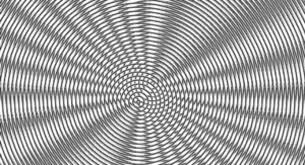
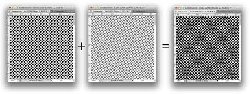

|

Die geschätzte Periode in x-Richtung: 32 Pixel.

Die geschätzte Periode in y-Richtung: 11 oder 22 Pixel.

Beschreibung
Lösung
Lösung
Lösung
Bilder haben eine Resolution. So kann ein Bild 500x500 Pixel groß sein. Abhängig davon wieviele Pixel zur verfügung stehen können leichter Aliasing-probleme auftreten. In Bildern macht sich aliasing durch einen Brückeneffekt bei den Pixeln bemerkbar. Also bei der Situation wo nicht genügend Pixel zur Verfügung stehen um der Steigung eines Farbverlaufes (beispielsweise einer Linie) zu folgen ohne dabei Pixel zu überspringen (in der höhe oder breite). So illustriert zum Beispiel der Bresenham Line Algorithm diese Verhaltensweise sehr gut mit dieser Grafik:

Die Konturen einer Linie liegen häufig auf subPixeln und müssen somit mit besseren Techniken abhängig vom Zentrum des jeweiligen Pixels betrachtet werden um, entscheidungen für die Lösung potentieller Aliasing Probleme zu entwickeln. Beispiele hierfür sind die Algorithmen: -Gupta und Sproull -Xiaolin Wu wobei diese verbesserungen des Bresenham Algorithmus sind. Zudem wird eine äußerst teure Methode des Supersampling verwendet wobei beispielsweise eine Textur von 1000x1000 auf 4000*4000 oder größer gesampled wird und somit mehr Pixel für die darstellung Aliasing-Freier Linien vorhanden sind. Dies jedoch ist natürlich nicht sehr skalierbar da die größere Textur auch eine größere computation benötigt. Wenn wir also jetzt unser Bild Downsamplen wird diese Brücke mit jedem DownSample schritt sichtbarer.
Beim Downsamplen wird es zu einem punkt kommen an denen der Moiré-Effekt entsteht, hierbei entsteht eine optischer Effekt bei dem unterschiedlich frequenzige in rotierten oder bewegenden zustand zu linien führen, Im prinzip ist die Sample Rate nicht hoch genug für die generierten details im Bild und deshalb entstehen schwarze bänder an frequenzähnlichen bereichen.
 
So wird bereits bei einem Downsample von 2 die "Sawtooth"-Struktur erkennbar (besonders an den Kanten der Blätter) und wird bei größeren Downsamples äußerst destruktiv für die Bildqualität.


Die geschätzte Periode in x-Richtung: 32 Pixel.
Die geschätzte Periode in y-Richtung: 11 oder 22 Pixel.
Horizontales Downsampling macht nur Sinn mit dem linken Bild: das Downsampling betrachtet x als referenz wenn es entscheidet ob es den ungeraden Pixel mit dem geraden Pixel davor austauschen soll, würden wir also das Rechte Bild für diese Downsampling Methode wählen würden wir keine veränderung verursachen da wir nur gleichfarbige Pixel nach links schieben würden. Daher entsteht bei rechten Bild im grunde kein neues Ergebnis (2Fach Horizontal Downsample):

Hingegen mit dem Linken Bild entsteht so etwas (2Fach Horizontal Downsample):

(3Fach Horizontal Downsample):

(4Fach Horizontal Downsample): (hier scheint der moiré-effekt am stärksten zu sein)

(5Fach Horizontal Downsample):

(6Fach Horizontal Downsample):

(7Fach Horizontal Downsample):

(8Fach Horizontal Downsample):
 Hierbei wird jeder ungerader Pixel mit dem Pixel davor ersetzt. Nun ersetzen wir soviele pixel mit dem davor bis wir das Moiré-Muster erkennen.
Hierbei wird jeder ungerader Pixel mit dem Pixel davor ersetzt. Nun ersetzen wir soviele pixel mit dem davor bis wir das Moiré-Muster erkennen.

(3Fach Vertikales Downsample):

(4Fach Vertikales Downsample):

(5Fach Vertikales Downsample): (hier scheint der moiré-effekt am stärksten zu sein)

(6Fach Vertikales Downsample):

(7Fach Vertikales Downsample):

(8Fach Vertikales Downsample):

Lösung


Bei beiden Bildern ist bei einer Bitreduzierung bereits deutlich zu erkennen das die höheren spektren, also die besonders Hellen Farben nicht mehr richtig dargestellt werden. Es sieht wie leere oder zumindest wie eine farbe aus einem fremden spektrum aus.


Das visuelle erscheinungsbild der Bilder mit hohem bitreduzierungsgrad wird äußerst flourescent, also leuchtende farben. Als würde man Farben in eigentlich nicht sichtbaren bereichen betrachten und sie nun mit den übrigen herkömmlichen farben darstellen.
Lösung